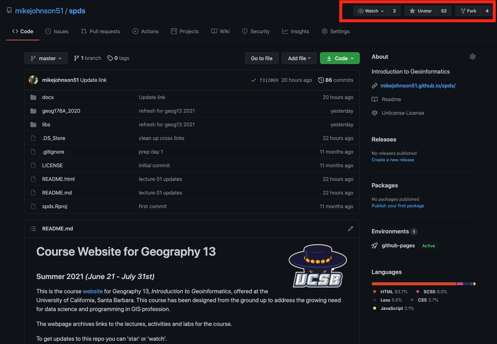
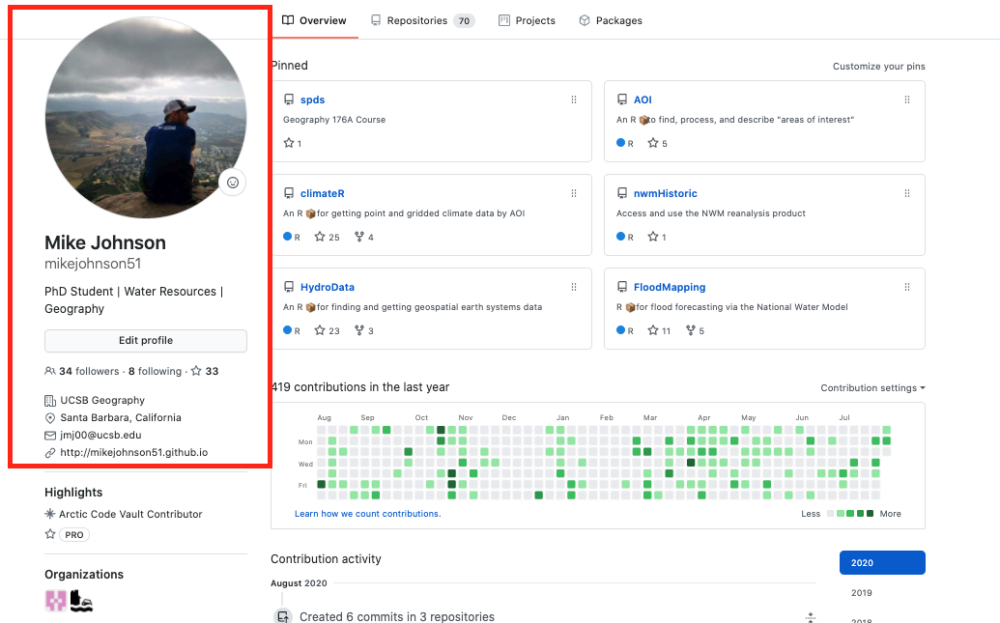

The RStudio terminal provides access to the operating system (OS) shell from within the RStudio IDE. Beneath the surface of any OS is an entire world that can only be accessed only from the command line.
The terminal is a gateway to that command line.
With it, instead of pointing and clicking, you can type commands and have your computer respond.
Goals
- Brief crash course in terminal commands
- Overcome the initial (and understandable!) anxiety associated with the terminal
- Install git on your machine
- Learn to execute simple tasks such as creating a file and navigating our system directory in the RStudio terminal
- Setup your Github account
Finding the Terminal
The terminal is a computer application. On a Mac, it is most frequently accessed via your Terminal application (do yourself a favor and download iTerm), and on Windows, through PowerShell. Fortunately, RStudio provides a built in terminal that imitates these applications within the RStudio IDE. The Terminal tab can be found next to the Console tab. If it is not visible, show it via Shift+Alt+T (or Tools > Terminal > New Terminal). Once visible, it should look something like this:

Useful Terminal Commands
In 176A we are only interested in using the terminal for speeding up basic tasks such as creating new files and folders, exploring folder structures, and seeing what it can teach us about our computer system. As such we will introduce only 6 common commands that are useful for navigating a file system and creating files.
pwd - print working directory
pwd shows the directory or “folder” you are currently in.
/Users/mikejohnson/github/spds/activities/geog176A-testls - list files
ls shows the files in the current working directory. This is equivalent to looking at the files in your Finder/Explorer/File Manager. Use ls -a to also list hidden files, such as .Rhistory and .git. Here we look at all the files in current working directory:
00-data-download.R
01-setup-file.R
02-do-something.R
03-make-some-figures.R
04-report.Rmdmkdir - make a directory
mkdir creates a new directory (or folder) in the current working directory.
If we wanted to add a directory (folder) in that path, we could do so like:
00-data-download.R
01-setup-file.R
02-do-something.R
03-make-some-figures.R
04-report.Rmd
my-folderNotably we see our my-folder directory!
cd - change directory
cd allows you to navigate through directories by changing working directory. There are many ways to navigate:
go to subdirectory of current working directory:
/Users/mikejohnson/github/spds/activities/geog176A-test
/Users/mikejohnson/github/spds/activities/geog176A-test/my-foldergo to parent (one folder up) of current working directory: cd ..
/Users/mikejohnson/github/spds/activities/geog176A-test
/Users/mikejohnson/github/spds/activitiesgo to your “home” directory: cd ~ or simply cd
/Users/mikejohnson/github/spds/activities/geog176A-test
/Users/mikejohnsonUsing absolute path, works regardless of your current working directory:.
/Users/mikejohnson/github/spds/activities/geog176A-test
/Users/mikejohnson/github/spdsWindows uses a slightly different syntax with the slashes between the folder names reversed, , e.g. cd C:_USERNAME.
Pro tip 1: Dragging and dropping a file or folder into the terminal window will paste the absolute path into the window. Pro tip 2: Use the tab key to autocomplete unambiguous directory and file names. Hit tab twice to see all ambiguous options.
Create a file
On a MacOS or Linux machine (anything running Bash) touch can be used to create a new file with a defined name and extension in the working directory. For example, we can create a new R file in our working directory as follows:
00-data-download.R
01-setup-file.R
02-do-something.R
03-make-some-figures.R
04-report.Rmd
my-folder
new-r-file.ROn a Windows machine (anything running Powershell) $null > can be used to create a new file with a defined name and extension in the working directory. Essentially, this is piping no data (null) into a new file. For example, we can create a new R file in our working directory as follows:
Installing git
Now we are going to use our terminal to find/install git. But what is git?
“Git is a free and open source, distributed, version control system designed to handle everything from small to very large projects with speed and efficiency.”
Step 1. See if git is already installed
In your terminal, type the following (note: PC USERS type where git) and hit Enter.
If git is installed, it will return a path like below.
/usr/bin/gitYou may be prompted to install git automatically – do it! If you are not automatically prompted to install, continue to Step 2 to install manually.
If you have git installed, or it automatically installed, consider yourself fortunate and move to section 3. Otherwise…
Step 2: Manually install git
You should only have to do this if git was NOT found in Step 1 !!!
MacOS
Install the Xcode command line tools (not all of Xcode), which includes Git, by typing the following in your terminal:
Windows
Install Git for Windows, also known as “Git Bash”, to get Git and some other useful tools, such as the Bash shell.
‘Git for Windows’ places the Git executable in the conventional location, which will help you and other programs (like RStudio) find and use it.
When asked about “Adjusting your PATH environment”, make sure to select “Git from the command line and also from 3rd-party software”. Otherwise, accept the defaults unless you have specific reasons not to.
Once git is installed - restart RStudio and make sure that you can see the git pathway (which/where git) in the terminal. Once installed, continue to Step 3.
Github
GitHub provides a platform for hosting software developed using Git. It offers the version control functionality of Git, plus its own features. While Git is a command line tool, GitHub provides a Web-based graphical interface.
Your GitHub
- Go to GitHub to register an account.
- Choose your user.name and email wisely! Your user.name will appear on all websites we build, and will eventually become a “long-form” business card to advertise your work online.
- Both your email and user.name will be used in the next steps so make sure to remember them
- Fill in your profile information including email, location, ect and change your profile image
- The image does NOT have to be a personal picture but should not remain the pixelated Github Avatar.
Finding Open Source code
GitHub is full of open source code that you can use, borrow, find, ect. To find your first repository search for mikejohnson51/spds. This should take you to the repository for this course!

In the upper right hand corner you see three options:
- watch: will notify you via email when changes to the repo are made
- star: this will place the repo in your “stared” repositories making it easy to find latter
- fork: this makes a copy of the current repo in your account that you can modify and build on.
Watching a repo can be nice, but for a class like this - which is updated every day - the notifications will be a lot.
For now, please star spds so that you can easily find it and I will have easy access to your accounts (you can always “unstar” after the course).
We will deal with forking repositories on Thursday.
Telling Git who we are
Now you have Git locally and you have a Github account that you’ve used to find published projects. Lets connect them…
The first thing we need to do is tell git who we are. Git comes with a tool called git config that lets us set the configuration variables that control how Git looks and operates.
In the RStudio Terminal, enter the following, where YOUR NAME is what you want git to know you by (this can be your user.name or real name)
So what did we just do? We used the terminal to tell git (a local program) to set a global configuration variable, called user.name, to a specified value. Next, tell git the email associated with your GitHub account in the same way …
When you are done, you can list your global configuration variables:
filter.lfs.clean=git-lfs clean -- %f
filter.lfs.smudge=git-lfs smudge -- %f
filter.lfs.process=git-lfs filter-process
filter.lfs.required=true
user.name=mike
user.email=jmj00@ucsb.edu
credential.helper=osxkeychain
color.status=auto
color.branch=auto
color.interactive=auto
color.diff=autoSo long as your user.name and user.email are consistent with your entries you are doing great 👍!
GitHub’s local home
Ok the last thing! This is a matter of convenience rather the necessity but we will create a local directory on our computers to house all git-enabled projects.
To do this, create a folder called github in the home directory of your computer. We can quickly do this by changing to our home directory (cd) and making a new folder (mkdir) called github:
Assignment
For this assignment two things must be submitted:
- Screenshot of your git config global variables (e.g.)
- a URL to your github account (e.g.) .
Going to your link, should show something like this (image, info, and star count > 1)

These should be submitted on the Guachospace dropbox.
END
Prepared for Geography 176A by Daily Exercise 02